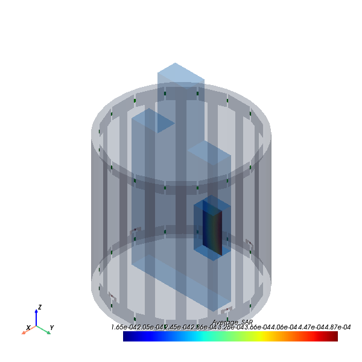
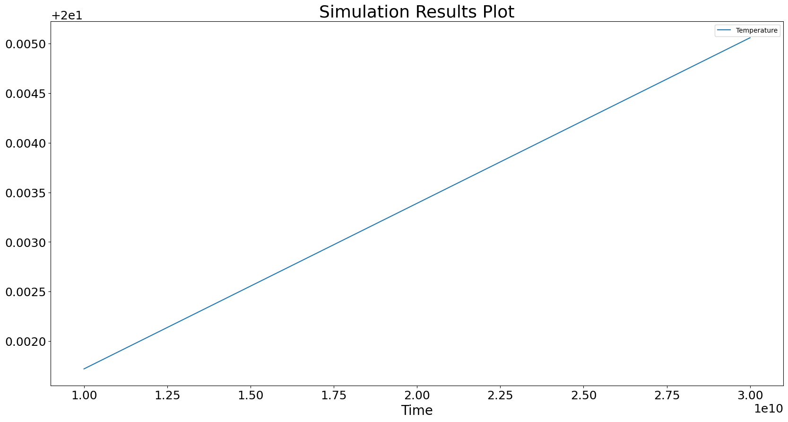

Download this example
Download this example as a Jupyter Notebook or as a Python script.
HFSS-Mechanical MRI analysis#
This example uses a coil tuned to 63.8 MHz to determine the temperature rise in a gel phantom near an implant given a background SAR of 1 W/kg.
Here is the workflow:
Step 1: Simulate the coil loaded by the empty phantom: Scale input to coil ports to produce desired background SAR of 1 W/kg at the location that is to contain the implant.
Step 2: Simulate the coil loaded by the phantom containing the implant in the proper location: View SAR in the tissue surrounding implant.
Step 3: Thermal simulation: Link HFSS to the transient thermal solver to find the temperature rise in the tissue near the implant versus the time.
Keywords: multiphysics, HFSS, Mechanical AEDT, Circuit.
Perform imports and define constants#
Perform required imports.
[1]:
import os.path
import tempfile
import time
from ansys.aedt.core import Hfss, Icepak, Mechanical, downloads
Define constants.
[2]:
AEDT_VERSION = "2024.2"
NUM_CORES = 4
NG_MODE = False # Open AEDT UI when it is launched.
Create temporary directory#
Create a temporary directory where downloaded data or dumped data can be stored. If you’d like to retrieve the project data for subsequent use, the temporary folder name is given by temp_folder.name.
[3]:
temp_folder = tempfile.TemporaryDirectory(suffix=".ansys")
Load project#
Open AEDT and the background_SAR.aedt project. This project contains the phantom and airbox. The phantom consists of two objects: phantom and implant_box.
Separate objects are used to selectively assign mesh operations. Material properties defined in this project already contain electrical and thermal properties.
[4]:
project_path = downloads.download_file(source="mri", destination=temp_folder.name)
project_name = os.path.join(project_path, "background_SAR.aedt")
hfss = Hfss(
project=project_name,
version=AEDT_VERSION,
non_graphical=NG_MODE,
new_desktop=True,
)
PyAEDT INFO: Parsing C:\Users\ansys\AppData\Local\Temp\tmpku2shz39.ansys\mri\background_SAR.aedt.
PyAEDT INFO: Python version 3.10.11 (tags/v3.10.11:7d4cc5a, Apr 5 2023, 00:38:17) [MSC v.1929 64 bit (AMD64)]
PyAEDT INFO: PyAEDT version 0.12.dev0.
PyAEDT INFO: Initializing new Desktop session.
PyAEDT INFO: Log on console is enabled.
PyAEDT INFO: Log on file C:\Users\ansys\AppData\Local\Temp\pyaedt_ansys_1b9680d9-9de3-4d7a-bfc9-829f526d69c3.log is enabled.
PyAEDT INFO: Log on AEDT is enabled.
PyAEDT INFO: Debug logger is disabled. PyAEDT methods will not be logged.
PyAEDT INFO: Launching PyAEDT with gRPC plugin.
PyAEDT INFO: New AEDT session is starting on gRPC port 59448
PyAEDT INFO: File C:\Users\ansys\AppData\Local\Temp\tmpku2shz39.ansys\mri\background_SAR.aedt correctly loaded. Elapsed time: 0m 0sec
PyAEDT INFO: AEDT installation Path C:\Program Files\AnsysEM\v242\Win64
PyAEDT INFO: Ansoft.ElectronicsDesktop.2024.2 version started with process ID 5760.
PyAEDT INFO: Project background_SAR has been opened.
PyAEDT INFO: Active Design set to backgroundSAR
PyAEDT INFO: Aedt Objects correctly read
Insert 3D component#
The MRI coil is saved as a separate 3D component.
‒ 3D components store geometry (including parameters), material properties, boundary conditions, mesh assignments, and excitations. ‒ 3D components make it easy to reuse and share parts of a simulation.
[5]:
component_file = os.path.join(project_path, "coil.a3dcomp")
hfss.modeler.insert_3d_component(input_file=component_file)
PyAEDT INFO: Modeler class has been initialized! Elapsed time: 0m 1sec
[5]:
<ansys.aedt.core.modeler.cad.components_3d.UserDefinedComponent at 0x2aa88927eb0>
Define convergence criteria#
On the Expression Cache tab, define additional convergence criteria for self impedance of the four coil ports.
Set each of these convergence criteria to 2.5 ohm. This example limits the number of passes to two to reduce simulation time.
[6]:
im_traces = hfss.get_traces_for_plot(
get_mutual_terms=False, category="im(Z", first_element_filter="Coil1_p*"
)
hfss.setups[0].enable_expression_cache(
report_type="Modal Solution Data",
expressions=im_traces,
isconvergence=True,
isrelativeconvergence=False,
conv_criteria=2.5,
use_cache_for_freq=False,
)
hfss.setups[0].props["MaximumPasses"] = 1
Edit sources#
The 3D component of the MRI coil contains all the ports, but the sources for these ports are not yet defined. Browse to and select the sources.csv file. The sources in this file were determined by tuning the coil at 63.8 MHz. Notice that input_scale is a multiplier that lets you quickly adjust the coil excitation power.
[7]:
hfss.edit_sources_from_file(os.path.join(project_path, "sources.csv"))
[7]:
True
Run simulation#
Save and analyze the project.
[8]:
hfss.save_project(file_name=os.path.join(project_path, "solved.aedt"))
hfss.analyze(cores=NUM_CORES)
PyAEDT INFO: Project solved Saved correctly
PyAEDT INFO: Key Desktop/ActiveDSOConfigurations/HFSS correctly changed.
PyAEDT INFO: Solving all design setups.
PyAEDT INFO: Key Desktop/ActiveDSOConfigurations/HFSS correctly changed.
PyAEDT INFO: Design setup None solved correctly in 0.0h 1.0m 56.0s
[8]:
True
Plot SAR on cut plane in phantom#
Ensure that the SAR averaging method is set to Gridless. Plot Average_SAR on the global YZ plane. Draw Point1 at the origin of the implant coordinate system.
[9]:
hfss.sar_setup(
assignment=-1,
average_sar_method=1,
tissue_mass=1,
material_density=1,
)
hfss.post.create_fieldplot_cutplane(
assignment=["implant:YZ"], quantity="Average_SAR", filter_objects=["implant_box"]
)
hfss.modeler.set_working_coordinate_system("implant")
hfss.modeler.create_point(position=[0, 0, 0], name="Point1")
plot = hfss.post.plot_field(
quantity="Average_SAR",
assignment="implant:YZ",
plot_type="CutPlane",
show_legend=False,
filter_objects=["implant_box"],
export_path=hfss.working_directory,
show=False,
)
PyAEDT INFO: SAR settings are correctly applied.
PyAEDT INFO: Parsing C:/Users/ansys/AppData/Local/Temp/tmpku2shz39.ansys/mri/solved.aedt.
PyAEDT INFO: File C:/Users/ansys/AppData/Local/Temp/tmpku2shz39.ansys/mri/solved.aedt correctly loaded. Elapsed time: 0m 0sec
PyAEDT INFO: aedt file load time 0.20560598373413086
PyAEDT INFO: PostProcessor class has been initialized! Elapsed time: 0m 0sec
PyAEDT INFO: Post class has been initialized! Elapsed time: 0m 0sec
C:\actions-runner\_work\pyaedt-examples\pyaedt-examples\.venv\lib\site-packages\pyvista\jupyter\notebook.py:37: UserWarning: Failed to use notebook backend:
No module named 'trame'
Falling back to a static output.
warnings.warn(

Adjust input Power to MRI coil#
Adjust the MRI coil’s input power so that the average SAR at Point1 is 1 W/kg. Note that the SAR and input power are linearly related.
To determine therequired input, calculate input_scale = 1/AverageSAR at Point1.
[10]:
sol_data = hfss.post.get_solution_data(
expressions="Average_SAR",
primary_sweep_variable="Freq",
context="Point1",
report_category="Fields",
)
sol_data.data_real()
hfss["input_scale"] = 1 / sol_data.data_real()[0]
PyAEDT INFO: Solution Data Correctly Loaded.
Analyze phantom with implant#
Import the implant geometry. Subtract the rod from the implant box. Assign titanium to the imported object rod. Analyze the project.
[11]:
hfss.modeler.import_3d_cad(os.path.join(project_path, "implant_rod.sat"))
hfss.modeler["implant_box"].subtract(tool_list="rod", keep_originals=True)
hfss.modeler["rod"].material_name = "titanium"
hfss.analyze(cores=NUM_CORES)
hfss.save_project()
PyAEDT INFO: Step file C:\Users\ansys\AppData\Local\Temp\tmpku2shz39.ansys\mri\implant_rod.sat imported
PyAEDT INFO: Materials class has been initialized! Elapsed time: 0m 0sec
PyAEDT INFO: Key Desktop/ActiveDSOConfigurations/HFSS correctly changed.
PyAEDT INFO: Solving all design setups.
PyAEDT INFO: Key Desktop/ActiveDSOConfigurations/HFSS correctly changed.
PyAEDT INFO: Design setup None solved correctly in 0.0h 1.0m 60.0s
PyAEDT INFO: Project solved Saved correctly
[11]:
True
Run a thermal simulation#
Initialize a new Mechanical transient thermal analysis. This type of analysis is available in AEDT in 2023 R2 and later as a beta feature.
[12]:
mech = Mechanical(solution_type="Transient Thermal", version=AEDT_VERSION)
PyAEDT INFO: Python version 3.10.11 (tags/v3.10.11:7d4cc5a, Apr 5 2023, 00:38:17) [MSC v.1929 64 bit (AMD64)]
PyAEDT INFO: PyAEDT version 0.12.dev0.
PyAEDT INFO: Returning found Desktop session with PID 5760!
PyAEDT INFO: No project is defined. Project solved exists and has been read.
PyAEDT INFO: No consistent unique design is present. Inserting a new design.
PyAEDT INFO: Added design 'Mechanical_BMQ' of type Mechanical.
PyAEDT INFO: Aedt Objects correctly read
Copy geometries#
Copy bodies from the HFSS project. The 3D component is not copied.
[13]:
mech.copy_solid_bodies_from(hfss)
PyAEDT INFO: Modeler class has been initialized! Elapsed time: 0m 0sec
[13]:
True
Link sources to EM losses#
Link sources to the EM losses. Assign external convection.
[14]:
exc = mech.assign_em_losses(
design=hfss.design_name,
setup=hfss.setups[0].name,
sweep="LastAdaptive",
map_frequency=hfss.setups[0].props["Frequency"],
surface_objects=mech.get_all_conductors_names(),
)
mech.assign_uniform_convection(
assignment=mech.modeler["Region"].faces, convection_value=1
)
PyAEDT INFO: Materials class has been initialized! Elapsed time: 0m 0sec
PyAEDT INFO: Mapping HFSS EM Loss
PyAEDT INFO: EM losses mapped from design backgroundSAR.
[14]:
<ansys.aedt.core.modules.boundary.BoundaryObject at 0x2aaa3286770>
Create setup#
Create a setup and edit properties.
[15]:
setup = mech.create_setup()
# setup.add_mesh_link("backgroundSAR")
# mech.create_dataset1d_design("PowerMap", [0, 239, 240, 360], [1, 1, 0, 0])
# exc.props["LossMultiplier"] = "pwl(PowerMap,Time)"
mech.modeler.set_working_coordinate_system("implant")
mech.modeler.create_point(position=[0, 0, 0], name="Point1")
setup.props["Stop Time"] = 30
setup.props["Time Step"] = "10s"
setup.props["SaveFieldsType"] = "Every N Steps"
setup.props["N Steps"] = "2"
Analyze project#
Analyze the Mechanical project.
[16]:
mech.analyze(cores=NUM_CORES)
PyAEDT INFO: Key Desktop/ActiveDSOConfigurations/Mechanical correctly changed.
PyAEDT INFO: Solving all design setups.
PyAEDT INFO: Key Desktop/ActiveDSOConfigurations/Mechanical correctly changed.
PyAEDT INFO: Design setup None solved correctly in 0.0h 5.0m 17.0s
[16]:
True
Plot fields#
Plot the temperature on cut plane. Plot the temperature on the point.
[17]:
mech.post.create_fieldplot_cutplane(
assignment=["implant:YZ"],
quantity="Temperature",
filter_objects=["implant_box"],
intrinsics={"Time": "10s"},
)
mech.save_project()
data = mech.post.get_solution_data(
expressions="Temperature",
primary_sweep_variable="Time",
context="Point1",
report_category="Fields",
)
data.plot()
mech.post.plot_animated_field(
quantity="Temperature",
assignment="implant:YZ",
plot_type="CutPlane",
intrinsics={"Time": "10s"},
variation_variable="Time",
variations=["10s", "30s"],
filter_objects=["implant_box"],
show=False,
)
PyAEDT INFO: Parsing C:/Users/ansys/AppData/Local/Temp/tmpku2shz39.ansys/mri/solved.aedt.
PyAEDT INFO: File C:/Users/ansys/AppData/Local/Temp/tmpku2shz39.ansys/mri/solved.aedt correctly loaded. Elapsed time: 0m 0sec
PyAEDT INFO: aedt file load time 0.18880558013916016
PyAEDT INFO: PostProcessor class has been initialized! Elapsed time: 0m 0sec
PyAEDT INFO: Post class has been initialized! Elapsed time: 0m 0sec
PyAEDT INFO: Project solved Saved correctly
PyAEDT INFO: Solution Data Correctly Loaded.
[17]:
<ansys.aedt.core.visualization.plot.pyvista.ModelPlotter at 0x2aaa4453af0>

Run a new thermal simulation#
Initialize a new Icepak transient thermal analysis.
[18]:
ipk = Icepak(solution_type="Transient", version=AEDT_VERSION)
ipk.design_solutions.problem_type = "TemperatureOnly"
PyAEDT INFO: Python version 3.10.11 (tags/v3.10.11:7d4cc5a, Apr 5 2023, 00:38:17) [MSC v.1929 64 bit (AMD64)]
PyAEDT INFO: PyAEDT version 0.12.dev0.
PyAEDT INFO: Returning found Desktop session with PID 5760!
PyAEDT INFO: No project is defined. Project solved exists and has been read.
PyAEDT INFO: No consistent unique design is present. Inserting a new design.
PyAEDT INFO: Added design 'Icepak_BGX' of type Icepak.
PyAEDT INFO: Aedt Objects correctly read
PyAEDT INFO: Parsing C:/Users/ansys/AppData/Local/Temp/tmpku2shz39.ansys/mri/solved.aedt.
PyAEDT INFO: File C:/Users/ansys/AppData/Local/Temp/tmpku2shz39.ansys/mri/solved.aedt correctly loaded. Elapsed time: 0m 0sec
PyAEDT INFO: aedt file load time 0.33210158348083496
Copy geometries#
Copy bodies from the HFSS project. The 3D component is not copied.
[19]:
ipk.modeler.delete("Region")
ipk.copy_solid_bodies_from(hfss)
PyAEDT INFO: Modeler class has been initialized! Elapsed time: 0m 0sec
PyAEDT INFO: Deleted 1 Objects: Region.
[19]:
True
Link sources to EM losses#
Link sources to the EM losses. Assign external convection.
[20]:
ipk.assign_em_losses(
design=hfss.design_name,
setup=hfss.setups[0].name,
sweep="LastAdaptive",
map_frequency=hfss.setups[0].props["Frequency"],
surface_objects=ipk.get_all_conductors_names(),
)
PyAEDT INFO: Materials class has been initialized! Elapsed time: 0m 0sec
PyAEDT INFO: Mapping EM losses.
PyAEDT INFO: EM losses mapped from design: backgroundSAR.
[20]:
<ansys.aedt.core.modules.boundary.BoundaryObject at 0x2aa9bad4d00>
Create setup#
Create a setup and edit properties. Simulation takes 30 seconds.
[21]:
setup = ipk.create_setup()
setup.props["Stop Time"] = 30
setup.props["N Steps"] = 2
setup.props["Time Step"] = 5
setup.props["Convergence Criteria - Energy"] = 1e-12
Create mesh region#
Create a mesh region and change the accuracy level to 4.
[22]:
bound = ipk.modeler["implant_box"].bounding_box
mesh_box = ipk.modeler.create_box(
origin=bound[:3],
sizes=[bound[3] - bound[0], bound[4] - bound[1], bound[5] - bound[2]],
)
mesh_box.model = False
mesh_region = ipk.mesh.assign_mesh_region([mesh_box.name])
mesh_region.UserSpecifiedSettings = False
mesh_region.Level = 4
mesh_region.update()
PyAEDT WARNING: No mesh operation found.
PyAEDT WARNING: No mesh region found.
PyAEDT INFO: Mesh class has been initialized! Elapsed time: 0m 0sec
PyAEDT ERROR: Setting name Level is not available. Available parameters are: EnableTransition, EnforceCutCellMeshing, Enforce2dot5DCutCell, ProximitySizeFunction, MeshRegionResolution, OptimizePCBMesh, Enable2DCutCell, CurvatureSizeFunction, StairStepMeshing.
[22]:
True
Create point monitor#
Create a point monitor.
[23]:
ipk.modeler.set_working_coordinate_system("implant")
ipk.monitor.assign_point_monitor(point_position=[0, 0, 0], monitor_name="Point1")
ipk.assign_openings(ipk.modeler["Region"].top_face_z)
# -
PyAEDT INFO: Opening Assigned
[23]:
<ansys.aedt.core.modules.boundary.BoundaryObject at 0x2aaa79d6e30>
Release AEDT#
Release AEDT and close the example.
[24]:
hfss.save_project()
hfss.release_desktop()
# Wait 3 seconds to allow AEDT to shut down before cleaning the temporary directory.
time.sleep(3)
PyAEDT INFO: Project solved Saved correctly
PyAEDT INFO: Desktop has been released and closed.
Clean up#
All project files are saved in the folder temp_folder.name. If you’ve run this example as a Jupyter notebook, you can retrieve those project files. The following cell removes all temporary files, including the project folder.
[25]:
temp_folder.cleanup()
Download this example
Download this example as a Jupyter Notebook or as a Python script.